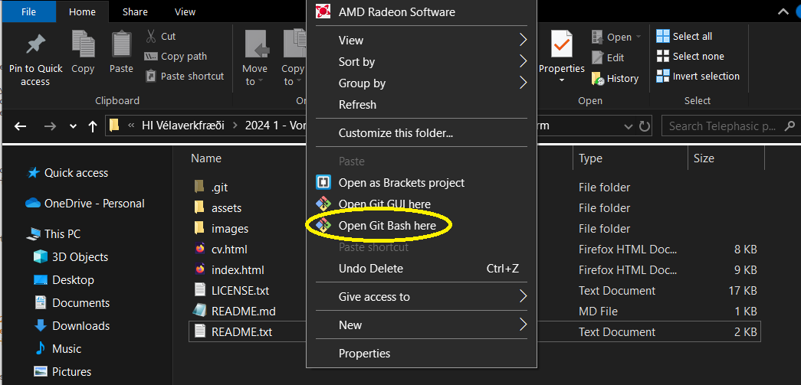

Project 1:
Making a website.
Introduction:
For the first course assignment, I am setting up a personal website/data repository in HTML, where I will be publishing my projects for this course. Along with the website, I will also be posting an up to date CV.
Since this first project is highly self-referential, there is a small, yet theoretical chance of a universe-ending, infinite loop of meta nonsense occurring, which I will try my best to avoid. in other words, we will be moving on to:
Part 1:
Documentation
The project outline dictates there should be clear documentation regarding the making of the website. Therefore, I started off with a sentance, stating he project outline dictates there should be clear documentation regarding the making of the website. followed by a sentence explaining I wrote a sentence, stating the project outline dictates there should be clear documentation regarding the making of the website.
Oh, no...
Anyway... Having escaped the time-loop, I started writing the website's HTML code, using Brackets. After some issues with the live preview feature, requiring some workarounds, I spent a fair amount of time going through website templates on Html5up.net, where I landed on the "Telephasic" template, chosen for its relative minimalism, although the social networking features had to be surgically removed.
With minimalism being the word of the day, the website will, for now, only contain the courses projects, and my CV, all of which will be accessible from the menu at the top of the website, which will be repurposed accross all sub-pages.
The project was mostly based on trial and error, although the source code for the example websites provided, proved a very useful starting point for my own.
Part 2:
Hopes and dreams
The advancements in CNC, 3D printing, and computer controlled laithes, has, in my opinion, fundamentally changed the way modern product development functions. Where the case used to be that mechanical engineers would, for the most part, do theoretical work, doing design on paper, before handing their designs off to a dedicated machine shop, where specialized machinists would try to bring half-baked ideas to reality.
In my view, the modern engineer should also have machining skills, both additive and subtractive, especially those who plan on going into fields where prototyping is a factor. For me, personally, improving my design work is top priority. Getting a better grasp on which manufacturing process is best applied to a given problem, and how to work with industrial machinery, such as CNC routers, and 3D printers.
As for the final project, I have been working on optimising a self starting syphon, for a different course, where I will be running computer simulations on a few variations of intake nozzles. I think it might be interesting to do a real world experiment with the setups deemed best/worst by the simulation.
Part 3:
Git good
Working according to the course video instructions, I downloaded the Git GUI. After setting up a repository on GitHub, and some minor issues with logins, I got the first test commit online.
The following steps are required in order to get your website up and running.
Step 1.
Create a Git repository on GitHub (mostly an exercise in next -> next -> finish, but remember to make it public.
Step 2.
In your working folder, open Git Bash, using the right click menu.

Step 3.
run the following lines in Git Bash:
'git init'
'git add .'
'git commit -m "name your commit"'
'git branch -M main'
'git remote add origin https://github.com/YOUR_USERNAME/YOUR_REPOSITORY_NAME
'git push -u origin main'
Step 4.
on GitHub, in your repository, go to "Settings", open GitHub pages, and under "branch", select "main" instead of "none".